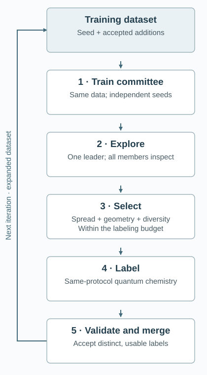
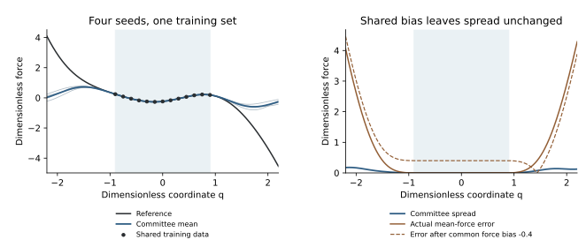

Molecular Excited States — Part III
The DP-GEN Learning Cycle
A machine-learned potential can make a trajectory inexpensive, but its training data cover only a fraction of the configurations that the trajectory may visit. DP-GEN addresses the resulting data-selection problem: train a committee, explore with a model, identify informative new geometries, compute reference labels, and train again on the expanded dataset.
Part I explained what an excited-state electronic calculation returns. Part II constructed initial nuclear positions and velocities using normal modes. This article follows those initial data into a learning loop. We first use the familiar VASP setting, then identify the changes needed for our molecular HamGNN–PSiNaD/NaF–PySCF workflow.
1. Why the Initial Dataset Is Insufficient
Imagine extracting a few hundred VASP MD frames and training a force field. The model may interpolate those frames well while remaining unreliable for a bond stretch or structural transition absent from them. Generating more frames near the same equilibrium structure does not necessarily repair that missing coverage.
Our molecule has the same problem. The Wigner construction in Part II starts near one optimized geometry, with displacements determined by its harmonic modes. Excited-state motion can subsequently change torsions and bond lengths or approach a small electronic gap. Initial harmonic coverage does not establish accuracy along those paths.
The retained motor seed pool contains 1128 admitted reference records, split into training and held-out subsets. Let \(\mathcal D_0\) denote only the training subset. Each subsequent loop adds accepted, distinct reference records to it; validation and test records retain their separate roles. The question is which new calculations should form that addition.
2. Separate the Model, Dynamics, and Learning Loop
Three decisions are involved: how to predict electronic information, how to generate new geometries, and when to request another expensive reference calculation. DP-GEN organizes their interaction. It does not replace the underlying electronic method or prescribe a unique dynamics approximation. The original work allows different exploration strategies, including ordinary and enhanced-sampling MD. The DP-GEN paper defines these components explicitly.
| Role | Familiar solid-state setup | Molecular workflow here |
|---|---|---|
| Reference labels | DFT energies and forces, for example VASP | PySCF SA2-CASSCF energies, gradients, and coupling |
| Learned predictor | A Deep Potential model | A custom two-state surrogate using a HamGNN backbone |
| Exploration | Model-driven MD, commonly LAMMPS | Short PSiNaD trajectories using NaF |
| Learning workflow | Train, explore, select, label, collect | DPGEN2 block with project-specific stage operators |
Standard DP-GEN commonly presents the stages as 00.train, 01.model_devi, and 02.fp, with selection included in the exploration-to-labeling transition. DPGEN2 makes the selection step explicit. The molecular interfaces in the last column are our extensions, rather than a claim that the default command directly supports this combination. The standard run layout and DPGEN2's operator structure describe the corresponding orchestration.
A further distinction matters: active learning chooses useful labels, whereas enhanced sampling changes how configurations are visited. They can work together. A committee cannot identify an unvisited reaction channel merely by evaluating the same local trajectories more often.
3. Measure Disagreement Without Confusing It with Error
For a new geometry, the reference answer is unavailable until another electronic calculation is performed. We therefore need a cheaper selection indicator. Train \(K\) models on the same training data using independent random initializations. Their different fitted predictions provide an empirical measure of model disagreement; they are not independent samples of the nuclear ensemble.
For one electronic surface, let \(\mathbf F_i^{(m)}(\mathbf R)\) be the three-component force on atom \(i\) predicted by member \(m\). First average over the models:
Subtract that mean, square the vector norm, and average the squared differences. Taking the square root returns a quantity with force units. Finally, take the largest value over atoms:
This is the force-deviation indicator used in the original DP-GEN construction. The denominator is \(K\); there is no additional division by three. It describes the observed spread of this committee, rather than an unbiased statistical estimate of a population variance. See the paper's methodology and force indicator.
The actual force error would instead compare the mean prediction with a reference force:
There is no identity equating these two quantities. One algebraic counterexample explains why. Add the same geometry-dependent energy bias \(b(\mathbf R)\) to every member. Its force contribution is \(-\nabla_i b\), so
Subtracting the new mean cancels the common contribution exactly:
The actual error can nevertheless change. A common architectural deficiency or restricted training domain can therefore escape a small-spread criterion. Reference spot checks are needed to calibrate selection rules and detect confident mistakes. The interactive example below makes this cancellation visible.
4. Follow One Complete Iteration
Once disagreement has been defined, we can follow how one training dataset becomes the next. The diagram separates reference-label acceptance from candidate generation; only the former enlarges the training set.

Train a committee
Each member sees the current \(\mathcal D_k\). Different random seeds must initialize separate models; copying one trained checkpoint four times gives no useful disagreement. The validation subset may select checkpoints, while the independent test subset remains outside model selection and candidate ranking.
Explore with the learned predictions
Choose initial coordinates, velocities, and, for nonadiabatic dynamics, an electronic initial state. A leader model supplies the predictions used by the integrator. At the inspected geometries, all members evaluate the same inputs. Thus one trajectory can be driven by one model while its reliability indicator comes from the whole committee. Different trajectories can use different leaders.
These trajectories propose geometries for data acquisition. Their populations, yields, or relaxation curves are not automatically validated physical results. Early stopping is appropriate when a trajectory leaves the model's declared domain.
Select a limited, useful set
In the standard two-threshold scheme, choose lower and upper force-deviation bounds, \(\sigma_{\mathrm{lo}}\) and \(\sigma_{\mathrm{hi}}\). Frames below the lower bound are usually skipped; frames between the bounds are candidates; very high-spread frames require rejection or diagnosis under the chosen policy. These are selection categories, not proofs of accuracy or physical invalidity. The official parameter reference specifies the bounds.
Selection also needs a budget and a diversity rule. Hundreds of adjacent MD frames may describe almost the same geometry. Geometric deduplication and trajectory quotas prevent one correlated segment from consuming the entire reference budget. A high-spread but physically meaningful configuration may deserve a controlled reference calculation; a geometry containing an accidental atom overlap needs a different response.
Label, validate, and merge
Run the reference electronic method at each selected geometry. The coordinate is the model's proposal; its final energy and derivatives come from quantum chemistry. Check solver convergence, finite outputs, units, identities, and the electronic-state consistency required by the application. Failed reference calculations remain failures with their provenance; they do not become training labels.
Let \(\Delta\mathcal D_k^{\mathrm{accepted}}\) contain only distinct, accepted reference records. The next training set is
The original data remain represented, and a new committee is trained on the enlarged set. Generated frames, selected frames, and accepted labels are three different counts. Completing a labeling batch is also different from establishing that the learning loop has converged.
5. Extend the Loop to Molecular Excited States
Our target propagator needs several electronic quantities at the same geometry, rather than one ground-state force. The current local two-state surrogate uses a HamGNN backbone to predict \(E_0\), \(E_1\), and a gap-scaled coupling vector. Its state forces are obtained by differentiating the predicted energies. This is a specific local multistate model; it is not an established global diabatic Hamiltonian representation. The adiabatic and diabatic propagation conventions are developed separately in MQC VIII.
For this implementation, define the positive gap and the scaled derivative coupling as
The bare derivative coupling \(\mathbf d_{01}\) has inverse-length units; \(\mathbf G_{01}\) has force units. The code reconstructs the former only within its declared positive-gap domain. It explicitly refuses an insufficient gap instead of silently replacing the denominator by a constant. This restricts the current interface near genuine degeneracies.
The committee monitors the gap spread, the largest state-and-atom force spread, and the largest atom-wise \(\mathbf G_{01}\) spread. Its force definition extends the preceding formula by taking \(\max_{s,i}\), where \(s=0,1\). In the planned motor augmentation, eligible geometries are ranked using
This project's selector ranks guarded candidates; it does not implement the illustrative lower/upper threshold rule above. The denominators make the three channels comparable for ranking. They are not certified error tolerances. The selector combines disagreement priority with a geometric-diversity reserve and per-trajectory limits.
Before this ranking, the current implementation checks geometry support, connectivity, close contacts, and the local gap domain. Refused configurations are recorded and the corresponding exploration stops. They are excluded from the present automatic labeling selector. Extending the support domain requires an explicit additional labeling strategy; a refusal is not evidence that the excluded region is physically irrelevant.
Keep the electronic labels comparable
A state can change its arbitrary wavefunction sign without changing its energy or force. For real electronic states, changing the sign of just one state changes the sign of its off-diagonal NAC, and hence of \(\mathbf G_{01}\). Comparing differently phased members can manufacture a coupling disagreement. Multiplication by the gap does not remove this gauge dependence.
Consequently, all committee members need consistent state labels and a common local electronic phase convention. New PySCF labels also require checks of the CASSCF active subspace, state identities, response calculations, and phase alignment. A converged electronic energy or a passed geometric guard alone establishes none of those additional properties.
The retained augmentation protocol calls for four independently initialized models, 32 short NaF explorations from accepted SHARC initial conditions, and a target of 256 new accepted training records, with at most 384 labeling candidates. It retains the same SA2-CASSCF(12,9)/6-31G* reference protocol. These are protocol choices and budgets, not reported achievements of a completed augmentation round. The initial distribution is the xTB/SHARC preparation described in Part II, rather than a CASSCF equilibrium ensemble.
6. Inspect a Reproducible Committee Example
To inspect the selection idea without waiting for molecular calculations, consider a dimensionless one-coordinate reference:
Four random-feature regressors fit the same 13 energy-and-force training points in \([-0.9,0.9]\), using independent seeded Gaussian features and identical fitting settings. Each force is the negative derivative of its model energy. A separate 601-point grid over \([-2.2,2.2]\) supplies synthetic candidate geometries. These are explanatory surrogate fits and a prescribed grid, not HamGNN training, MD sampling, or a completed DP-GEN reproduction.
When four models agree—and when agreement is misleading

Synthetic random-feature example; no molecular dynamics, HamGNN, or quantum-label calculation.
Move the inspected coordinate to compare committee spread with the actual force error, which is available here because the reference is analytic. Adjust the two thresholds to change the candidate categories. Those thresholds teach standard-style triage; they are unrelated to the molecular ranking scales in Section 5.
The shared-bias option adds \(b(q)=0.4q\) to every model energy, and therefore subtracts \(0.4\) from every model force. At \(q=0\), the force spread remains about \(4.57\times10^{-5}\), while the mean-force error changes from about \(1.07\times10^{-4}\) to \(0.400\). This is the cancellation derived in Section 3, with energy and force biases kept consistent.
With the example's default thresholds \(0.03\) and \(0.15\), the grid has 360 below-threshold points, 203 candidates, and 38 above-threshold points. These counts describe a classification before any molecular reference acceptance. The mean-force RMSE is about \(2.25\times10^{-4}\) inside the training interval and \(1.70\) outside it, in the example's dimensionless units. Modest spread can coexist with a large extrapolation error even before adding the deliberate shared bias.
Download the teaching generator, model parameters, numerical checks, and curve checks, following the reproduction notes. The workflow drawing script regenerates the conceptual cycle diagram. Running these examples verifies their definitions and illustrations; it does not assess the molecular potential's accuracy.
7. Identify the Cost and Parallel Work
The saving comes from using inexpensive predictions for exploration and reserving quantum chemistry for selected geometries. Let \(N_{\mathrm{eval}}\) count actual geometry evaluations across all exploration trajectories, \(N_{\mathrm{label}}\) count reference calculations attempted, and \(C_{\mathrm{ML}}\) and \(C_{\mathrm{ref}}\) denote their respective per-geometry costs. A simple work estimate is
This assumes that all members evaluate every inspected geometry and that the leader prediction is reused. An evaluation is not necessarily one stored trajectory frame or one nuclear time step; an integrator can request several geometries per step. The expression counts work, not elapsed wall time.
Committee training, separate exploration trajectories, and independent reference labels provide parallel work within their stages. The stage dependencies remain: labels must be collected and checked before the enlarged dataset can be used for the next training round. Increasing concurrency shortens suitable stages but does not create more informative candidates or make a failed CASSCF label acceptable.
For our multistate reference, a selected geometry needs two-state electronic optimization and derivatives, including coupling response. The cost is therefore broader than a ground-state SCF energy alone. Actual timing measurements are needed to decide whether committee inference, gradient evaluation, or reference labeling dominates a particular round.
8. Decide What Has Actually Converged
A learning round can finish successfully while the potential is still inadequate. Assess stopping against a stated application domain: initial-state distribution, electronic states, geometries, time window, and target observables. Three complementary checks address different possible failures:
- Coverage: independent starts and relevant exploration conditions revisit the required regions without repeatedly hitting unsupported-domain stops. Few selected points are meaningful only if the exploration itself is adequate.
- Reference accuracy: fresh reference spot checks and independent held-out geometries show acceptable errors in energies, state forces, and couplings. Committee agreement alone does not supply this check.
- Observable stability: the quantities eventually needed from the dynamics remain stable under additional accepted data, model changes, and the relevant trajectory/time-step checks.
Validation data may guide checkpoint selection; test results must not become a repeatedly tuned training target. Where trajectories contribute multiple nearby frames, split and assess them with their correlation in mind. Keep the test geometries separate from the acquisition pool, and do not count rejected, duplicate, or uncomputed candidates as new training records.
Even an accurate surrogate reproduces only its chosen reference electronic method. The learning loop cannot repair an inadequate CASSCF active space, supply missing nuclear sampling, or remove the underlying approximation in NaF propagation. Its contribution is to concentrate reference calculations where they are useful for the intended simulation, while keeping the model's evidence and boundaries explicit.
Sources and Reproduction
- Yuzhi Zhang et al., DP-GEN: A concurrent learning platform for the generation of reliable deep learning based potential energy models. Full text — committee initialization, exploration, force deviation, and data generation.
- DP-GEN: Overview of the Run process — standard stage layout and collection of new labels.
- DP-GEN run parameters — force-deviation bounds, labeling budgets, and selection controls.
- DPGEN2 Developers' guide — training, exploration, selection, labeling, and dataset increment interfaces.
- PSiNaD nonadiabatic tutorial at the retained revision — provenance of the molecular example; the present workflow uses its own PySCF reference protocol and multistate surrogate.
- Teaching example and reproducible checks — seeded surrogate fits, analytic reference, shared-bias control, and the workflow SVG generator.
Molecular Excited States Series
- I. From VASP to SA-CASSCF — what a fixed-geometry electronic calculation returns.
- II. From Hessians to Wigner Initial Conditions — how one structure generates a nuclear initial ensemble.
- III. The DP-GEN Learning Cycle — how exploration and reference calculations expand the training domain.